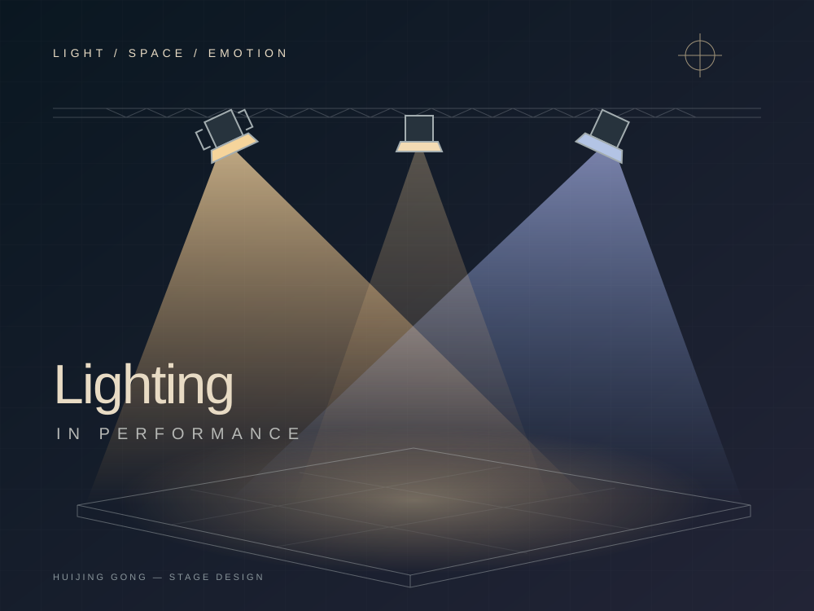

建立温暖的内心空间
泛光照亮客厅，窗后光模拟日光，人物聚光与背景保持层次。

作品 / 灯光图像实验
五组实拍实验，以色片、不同光位、黑白背景与半透明材料，观察阴影、轮廓、空间层次和情绪的变化。
设计过程 / 从文学到舞台
以 Virginia Woolf 的《The Lady in the Looking Glass》为创作来源，将 Isabella 的客厅设为内心世界，布景后的空间代表外部现实。方案选择黑匣子舞台，以镜面、窗玻璃和家具反射连接人物与环境。这是分场灯光设计提案，非已上演的制作记录。
泛光照亮客厅，窗后光模拟日光，人物聚光与背景保持层次。
关掉泛光，提高人物聚光的强度，改变窗后光的色温与亮度，突出情绪变化。
分离人物与镜面的光区，以不规则闪烁、冷暖对比和最终淡出表达冲突与崩溃。
分场方案 / 光位与叙事节奏
案例分析 / 非原创演出
对山海塾（Sankai Juku）《Tobari》的个人分析，关注暖色顶光、冷暖侧光、模糊光区与黑暗如何改变身体的可见性和空间感。这一部分是对他人演出的研究，不作为我的灯光设计成果展示。
顶光和侧光改变肌肉、骨骼与面部的阴影；低照度背景弱化空间边界，使舞者仿佛处在虚空之中。
从暖到冷、从可见到隐没的变化，让灯光承担演出推进和情绪转折的功能。